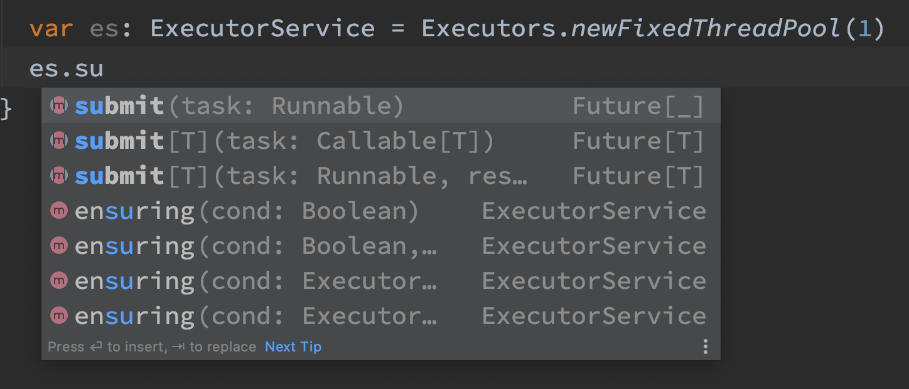
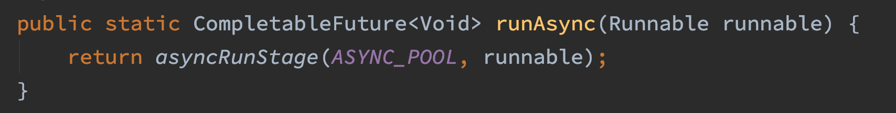

Recently I have a heated debate with my colleague about
a proper return type for async procedures
(procedure is just a function that returns Unit in Scala.)
My point of view was that Future[Unit] is the right type.
Let me present my way of reasoning here.
Let’s start with lifting.
Lifting in functional programming is defined as an operation that
transforms a function f: A => B into a function f': M[A] -> M[B],
where M[_] is a functor. A functor M[A], in simple words, is just a wrapper around a value of
type A with addition of extra map operation that can be used to transform the wrapped value.
A lot of types that we are using in our daily practice as programmers like Option[T], Try[T] or
Future[T] are functors. Because Scala does not define Functor[T] trait we cannot write a generic
lift function that could work with all these types. Instead we must write specific lift functions that
work with only single functor type e.g.
def liftOption[A, B](f: A => B): Option[A] => Option[B] = {
optA => optA.map(f)
}We can use liftOption to e.g. make negate function work with Option[Int] argument:
def negate(a: Int): Int = -a
val negateOpt = liftOption(negate)
println(negateOpt(Some(1)))
println(negateOpt(None))
// prints:
// Some(-1)
// NoneSimilarly to liftOption we could define liftFuture:
def liftFuture[A,B](f: A => B)
(implicit ec: ExecutionContext)
: Future[A] => Future[B] = {
futA => futA.map(f)
}And then we can use it on a function that returns Unit to get an async function that,
no surprise here, will return Future[Unit]:
import ExecutionContext.Implicits.global
def printIt(s: String): Unit = println(s)
val printItF = liftFuture(printIt)
val r: Unit = Await.result(
printItF(Future.successful("ok")),
duration.Duration.Inf)But of course my colleague had his own arguments.
He pointed out that e.g. ExecutorService submit method returns Future<?>, not Future<Void> as my
reasoning would suggest. So there must be a good reason why library designers
chosen Future<?>, he continued, but when asked what exactly this reason could be
he was not able to answer. But he counter my question arguing that the standard
library establishes good patterns and practices, so if they use Future<?>
then we should do the same in our code.

My colleague had a point. I needed to research the subject: why Future<?> and not Future<Void>?
After a bit of googling I noticed that runAsync method of
CompletableFuture
does not follow the Future<?> convention and instead returns CompletableFuture<Void>.
So it looks like the library designers changed their mind and now prefer returning Future<Void>:

I pointed this out to my colleague, but he countered by saying that Future[Unit]
is just uncomfortable to use. Consider this example he said:
def findIdByName(name: String): Future[Int] = {
Future.successful(123)
}
def deleteRecord(id: Int): Future[Int] = {
Future.successful(1)
}
def doStuff(name: String): Future[Unit] = {
findIdByName(name)
.flatMap(id => deleteRecord(id))
.map(_ => ())
}Look at this ugly .map(_ => ()) he said, it’s awful, isn’t it?
I pointed out that he can use for-comprehensions to get rid
of the last map, but may argument was weak - the
fluent interface is often nicer and faster to work with.
def doStuff(name: String): Future[Unit] = {
for {
id <- findIdByName(name)
_ <- deleteRecord(id)
} yield ()
}Indeed I find it very strange that Scala does not provide a conversion from
Future[T] to Future[Unit] out of the box. In sync code we could write:
def doStuff(name: String): Future[Unit] = {
val id <- findIdByName(name)
deleteRecord(id)
}and the value returned by deleteRecord would be automatically discarded.
Why can’t we have something similar in async code?
Yet this last problem pointed me to the following issue.
If we agree to use Future[_] everywhere, then we may return by mistake
a value that should never be returned.
In other words we may inadvertently break object or module
encapsulation.
There is also a small risk of a memory leak, if we return
say a huge array and the Future[_] value will be kept for a while.
This is illustrated by the following example:
// In some object
private var balance = 1234
private def increaseBalance(amount: Int): Future[Int] = {
val oldBalance = balance
balance = oldBalance + amount
Future.successful(oldBalance)
}
// This should return nothing
def doStuff(): Future[_] = {
increaseBalance(100)
}
// Calling code
val escapedBalance = Await.result(obj.doStuff(), duration.Duration.Inf)
println(escapedBalance) // 1234Seeing all these arguments, in the end, we decided to go with Future[Unit] although
it is not a perfect solution.
There is nothing better than a healthy debate BTW ;D